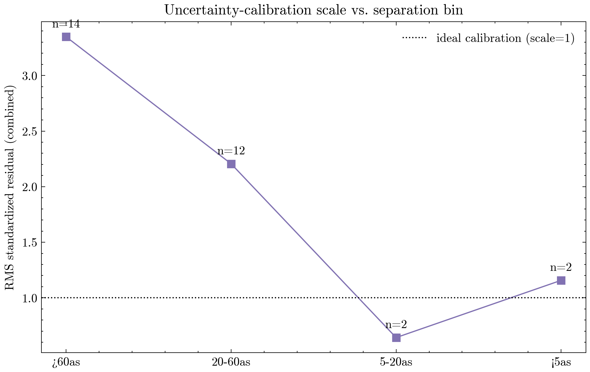
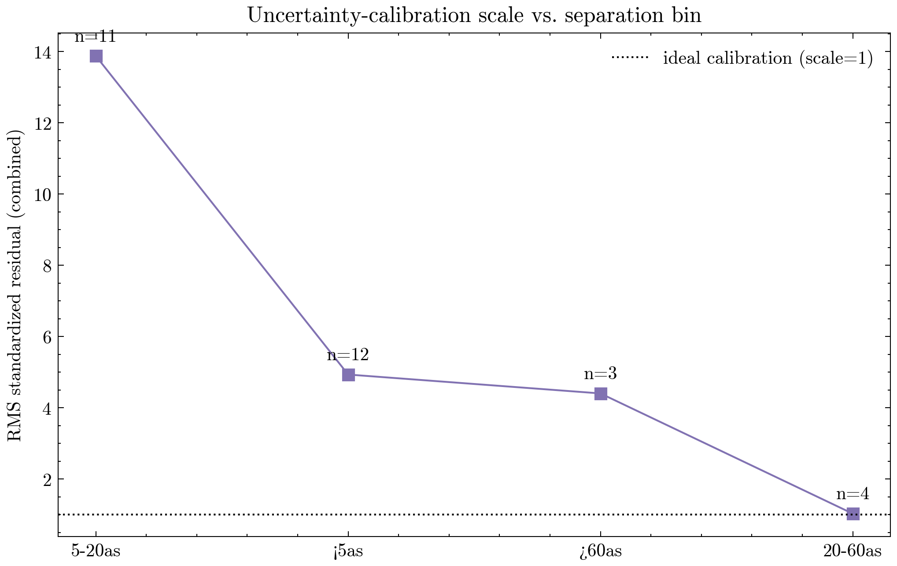

Provenance
SHA-256, LF-normalised text
098d4a963e75b38f3db6bdbd4a14b22b0c014300de1177e0a27de33839e4ead0Browse 16 versioned evidence files. Table previews simply display stored rows. Consult the project report for the source, processing steps, and inference assumptions.


098d4a963e75b38f3db6bdbd4a14b22b0c014300de1177e0a27de33839e4ead0| pair_id | source_id_a | source_id_b | sep_au | r_chance_align |
|---|---|---|---|---|
| WB0000 | 1003080575370626944 | 1003080575370617728 | 658.4 | 7.9316e-06 |
| WB0001 | 100536353946761728 | 100536353946762112 | 1677.5 | 0.00019496 |
| WB0002 | 1006533767732900736 | 1006533763440848256 | 620.8 | 9.1814e-07 |
| WB0003 | 1008929564913828224 | 1008929569208837376 | 854.2 | 6.6423e-06 |
f74d50285f5dbaec0958b695794b8e740074fbb241d09796545e1303d81e7b16| product_id | source | source_url | retrieved_utc | sha256 | file_size_bytes | selection_reason |
|---|---|---|---|---|---|---|
| wide_binary_real_sample_v1 | VizieR J/MNRAS/506/2269 + Gaia DR3 (gaiadr3.gaia_source) | https://vizier.cds.unistra.fr/viz-bin/VizieR-3?-source=J/ApJ/934/148 | 2026-07-16T10:46:24.253760+00:00 | 4233a7ed98b7ac6e7695ecb9a42f17d7ea54c59cf817081c55729d7ffc60ea1d | 10766 | deterministic row-limited VizieR sample (n_pairs=30), cross-matched against live Gaia DR3 TAP; 30 pairs retained, 0 skipped for... |
3735df0e9c710cc5193ae5c7312a3f053d7d06e15a7eb9043f323972f3b32df0f8df71873217bfcc2c970f72e1739152bdeaf3c277bda3465ccc69ec5babb3cf| x | value | uncertainty |
|---|---|---|
| 0 | 0.10 | 0.02 |
| 1 | 0.18 | 0.03 |
| 2 | 0.14 | 0.02 |
| 3 | 0.24 | 0.04 |
2231cd2f44a7854fefcb8da60f527333a903c9c7a75fbd9154fdde13de699305| pair_id | source_id_a | source_id_b | parallax_a | parallax_a_error | parallax_b | parallax_b_error |
|---|---|---|---|---|---|---|
| WB0000 | 1003080575370626944 | 1003080575370617728 | 9.945238640203309 | 0.5370549559593201 | 9.497094370166854 | 0.6354455351829529 |
| WB0001 | 100536353946761728 | 100536353946762112 | 4.584894977494072 | 0.6148744225502014 | 5.554634019341078 | 0.9381451606750488 |
| WB0002 | 1006533767732900736 | 1006533763440848256 | 4.843248662224841 | 0.47549453377723694 | 4.904897587275129 | 0.3468643128871918 |
| WB0003 | 1008929564913828224 | 1008929569208837376 | 4.911993253938134 | 0.29748424887657166 | 5.235379521397558 | 0.22516030073165894 |
e3a72f37ab2c5a23acc6a0d765703acca849d4b9a37bd318c58c3cc1fa3e247ebdac8515aae7d81b25e55de004207889fd7380bca4d83f2f3931d5366da8cff814e5e3c41569563c92c9b415e175a9a0c23696ae5e5dadf01561f14b8225acc5a12f37c268a87fe68cfbcbe113b6bba01366f63b870ba795bcb125617f5177846d4d99a1f0282b2058bbebfcb0293d0d7d65cbcad579d73527a58c5a2a8dacce6d4d99a1f0282b2058bbebfcb0293d0d7d65cbcad579d73527a58c5a2a8dacce584c3abc8a3a385c4876e4c4b7fe7a9774a6cd87bf1b1db3fb0a3cde4493e2e40bbcd15da5db21a6f894743d435050f120a80c85380247167fd430492bcde7b1b1544cb63296b6ec3900663c3cbbdd0c8a3faf213094d8f768b6eaf3034b07d49a091d89760f573976a2d3e097101a8763beea2d47ac739e6286bdd330e8a446d16c084547f922748a021e68ad8f83ecd55b29bd9a5739b89d8dc086af965b76SHA-256 values verify the stored files. They do not independently validate the scientific analysis. Rebuild this page with python scripts/evidence_catalog.py followed by python scripts/render_evidence_page.py.